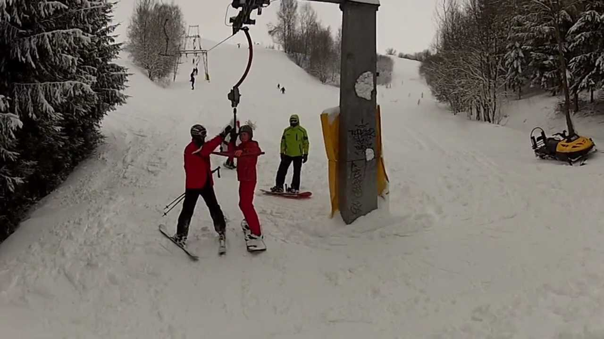
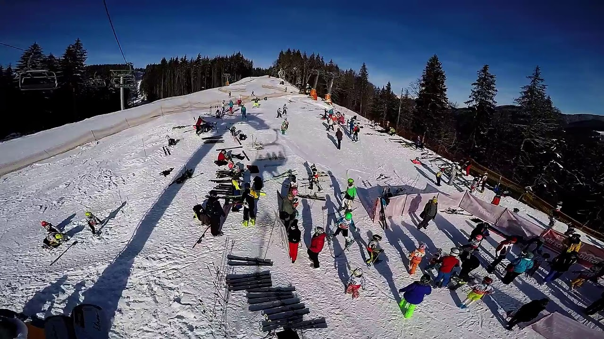

Slidinėjimo kelionės
2020.10.30 03:16
8 700 11007 Atostogų gidas Dovanų kuponas Apie mus Kontaktai Norų sąrašas 8 700 11007 Vilnius
8 5 2430637 Kaunas
8 37 240 114 Klaipėda
8 46 420902 Adresai ir darbo laikai Užklausa Kelionės paieška Uždaryti Geriausi pasiūlymai Lietuvoje Poilsinės Pažintinės Egzotinės Kruizai Paskutinė minutė Slidinėjimas Atostogų gidas Viešbučiai poilsiui Paslaugos verslui Apie mus Kontaktai Geriausi pasiūlymai Lietuvoje Poilsinės Pažintinės Egzotinės Kruizai Paskutinė minutė Slidinėjimas Atostogų gidas Viešbučiai poilsiui Paslaugos verslui Apie mus Kontaktai Kelionės tipas Visos kelionės Poilsinės kelionės Geriausi pasiūlymai Paskutinė minutė Pažintinės kelionės Egzotinės kelionės Kruizai Slidinėjimas Atostogos Lietuvoje Kryptis - Visos šalys - Turkija Antalijos regionas Marmaris Bodrumas Bulgarija Varna Burgasas Kipras Larnaka Malta Malta Egiptas Šharm El Šheichas Hurgada Ispanija Maljorka Malaga Kosta Dorada Barselonos pakrantė Tenerifė Kosta Brava Prancūzija Nica Kroatija Graikija Kreta Korfu Rodo sala Peloponesas Kanarų salos Jungtiniai Arabų Emyratai Dubajus Austrija Italija Portugalija Marokas Tunisas Tailandas Vietnamas Šri Lanka Maldyvai Indija Izraelis Eilatas Mongolija Kirgizija Madagaskaras Makedonija Albanija Nikaragva Namibija Omanas Botsvana Kazachstanas Gruzija (Sakartvelas) Batumis Argentina Brunėjus Kosovas Laosas Jordanija Azerbaidžanas Etiopija Filipinai Armėnija Čilė Kretos sala Seišeliai Jamaika Ekvadoras Bahamai Uzbekistanas Antarktida Velsas Serbija Bosnija ir Hercegovina Kosta Rika Belizas Havajai Kanada Mauricijus Urugvajus Škotija Bahreinas Singapūras Prancūzijos Polinezija Karibų salos Sent Lusija Lenkija Vengrija Naujoji Zelandija Slovakija Latvija Estija Rusija Airija Anglija Vokietija Tibetas Indonezija Slovėnija Norvegija Ukraina Čekija Kinija Peru Bolivija Šveicarija Juodkalnija Tolimoji Rusija Rumunija Švedija Zimbabvė Brazilija JAV Meksika Japonija Malaizija Pietų Afrikos Respublika Mianmaras (Birma) Balis Australija Liuksemburgas Olandija Suomija Kuba Lietuva Pietų Korėja Laplandija Gvatemala Islandija Danija Belgija Kambodža Regionas Vilnius Birštonas Trakai Plateliai - Plungė Palanga Anykščiai Raseiniai Neringa Šilutė Molėtai Druskininkai Ignalina Zarasai Ukmergė Marijampolė Biržai Šventoji Panevėžys Mažeikiai Rokiškis - Visa Lietuva - Jurbarkas Kaunas Klaipėda Telšiai Keliautojai Keliautojai Suaugę 0 Vaikai (2-13m.) 0 1 vaiko amžius 0 - 2m. 2m. 3m. 4m. 5m. 6m. 7m. 8m. 9m. 10m. 11m. 12m. 13m. 14m. 2 vaiko amžius 0 - 2m. 2m. 3m. 4m. 5m. 6m. 7m. 8m. 9m. 10m. 11m. 12m. 13m. 14m. 3 vaiko amžius 0 - 2m. 2m. 3m. 4m. 5m. 6m. 7m. 8m. 9m. 10m. 11m. 12m. 13m. 14m. Ok Data, trukmė Data, trukmė Trukmė: 1 - 16+ + 2 dienos Laikotarpis Mėnesiai Bet kada 2020 Spalis Lapkritis Gruodis 2021 Sausis Vasaris Kovas Balandis Gegužė Birželis Liepa Rugpjūtis Rugsėjis Spalis Lapkritis Gruodis Ok Kaina Kaina Iki 300 € 300 € - 400 € 400 € - 500 € 500 € - 700 € 700 € - 900 € 900 € - 1500 € 1500 € - 3000 € Virš 3000 € Kaina asmeniui: Iki 300 € Nesvarbu Ok Viešbučio lygis Viešbučio lygis ir geriau ir geriau ir geriau ir geriau Nesvarbu Maitinimas Maitinimas Ultra viskas įskaičiuota ir geriau Viskas įskaičiuota ir geriau Pusryčiai ir vakarienė ir geriau Pusryčiai ir geriau Visi maitinimai Išvykimas iš Išvykimas iš Vilnius Kaunas Ryga Organizatorius Organizatorius Aza tours Tez tour Novaturas Autobusu Lėktuvu Egzotinės Poilsinės Egzotinės Kruizai Autobusu Lėktuvu Egzotinės Kruizai Su vadovu iš Lietuvos Su prijungimu prie grupės Individualios egzotinės Egzotinis poilsis Egzotiniai kruizai Viduržemio jūros kruizai Karibų kruizai Egzotiniai kruizai Šiaurės Europos kruizai Baltijos kruizai 200 eur medikams SPA poilsis Sodyba Pajūryje Atskiras namelis VIP poilsis Poroms Su Šeima Aktyvus poilsis 200 eur medikams savaitgalį Ieškoti
Slidinėjimo kelionės
Kelionių paieška... Lietuvoje Poilsinės Pažintinės Egzotinės Kelionės tipas Visos kelionės Poilsinės kelionės Geriausi pasiūlymai Paskutinė minutė Pažintinės kelionės Egzotinės kelionės Kruizai Slidinėjimas Atostogos Lietuvoje Kryptis - Visos šalys - Turkija Antalijos regionas Marmaris Bodrumas Bulgarija Varna Burgasas Kipras Larnaka Malta Malta Egiptas Šharm El Šheichas Hurgada Ispanija Maljorka Malaga Kosta Dorada Barselonos pakrantė Tenerifė Kosta Brava Prancūzija Nica Kroatija Graikija Kreta Korfu Rodo sala Peloponesas Kanarų salos Jungtiniai Arabų Emyratai Dubajus Austrija Italija Portugalija Marokas Tunisas Tailandas Vietnamas Šri Lanka Maldyvai Indija Izraelis Eilatas Mongolija Kirgizija Madagaskaras Makedonija Albanija Nikaragva Namibija Omanas Botsvana Kazachstanas Gruzija (Sakartvelas) Batumis Argentina Brunėjus Kosovas Laosas Jordanija Azerbaidžanas Etiopija Filipinai Armėnija Čilė Kretos sala Seišeliai Jamaika Ekvadoras Bahamai Uzbekistanas Antarktida Velsas Serbija Bosnija ir Hercegovina Kosta Rika Belizas Havajai Kanada Mauricijus Urugvajus Škotija Bahreinas Singapūras Prancūzijos Polinezija Karibų salos Sent Lusija Lenkija Vengrija Naujoji Zelandija Slovakija Latvija Estija Rusija Airija Anglija Vokietija Tibetas Indonezija Slovėnija Norvegija Ukraina Čekija Kinija Peru Bolivija Šveicarija Juodkalnija Tolimoji Rusija Rumunija Švedija Zimbabvė Brazilija JAV Meksika Japonija Malaizija Pietų Afrikos Respublika Mianmaras (Birma) Balis Australija Liuksemburgas Olandija Suomija Kuba Lietuva Pietų Korėja Laplandija Gvatemala Islandija Danija Belgija Kambodža Regionas Vilnius Birštonas Trakai Plateliai - Plungė Palanga Anykščiai Raseiniai Neringa Šilutė Molėtai Druskininkai Ignalina Zarasai Ukmergė Marijampolė Biržai Šventoji Panevėžys Mažeikiai Rokiškis - Visa Lietuva - Jurbarkas Kaunas Klaipėda Telšiai Keliautojai Keliautojai Suaugę 0 Vaikai (2-13m.) 0 1 vaiko amžius 0 - 2m. 2m. 3m. 4m. 5m. 6m. 7m. 8m. 9m. 10m. 11m. 12m. 13m. 14m. 2 vaiko amžius 0 - 2m. 2m. 3m. 4m. 5m. 6m. 7m. 8m. 9m. 10m. 11m. 12m. 13m. 14m. 3 vaiko amžius 0 - 2m. 2m. 3m. 4m. 5m. 6m. 7m. 8m. 9m. 10m. 11m. 12m. 13m. 14m. Ok Data, trukmė Data, trukmė Trukmė: 1 - 16+ + 2 dienos Laikotarpis Mėnesiai Bet kada 2020 Spalis Lapkritis Gruodis 2021 Sausis Vasaris Kovas Balandis Gegužė Birželis Liepa Rugpjūtis Rugsėjis Spalis Lapkritis Gruodis Ok Kaina Kaina Iki 300 € 300 € - 400 € 400 € - 500 € 500 € - 700 € 700 € - 900 € 900 € - 1500 € 1500 € - 3000 € Virš 3000 € Kaina asmeniui: Iki 300 € Nesvarbu Ok Viešbučio lygis Viešbučio lygis ir geriau ir geriau ir geriau ir geriau Nesvarbu Maitinimas Maitinimas Ultra viskas įskaičiuota ir geriau Viskas įskaičiuota ir geriau Pusryčiai ir vakarienė ir geriau Pusryčiai ir geriau Visi maitinimai Išvykimas iš Išvykimas iš Vilnius Kaunas Ryga Organizatorius Organizatorius Aza tours Tez tour Novaturas Autobusu Lėktuvu Egzotinės Poilsinės Egzotinės Kruizai Autobusu Lėktuvu Egzotinės Kruizai Su vadovu iš Lietuvos Su prijungimu prie grupės Individualios egzotinės Egzotinis poilsis Egzotiniai kruizai Viduržemio jūros kruizai Karibų kruizai Egzotiniai kruizai Šiaurės Europos kruizai Baltijos kruizai 200 eur medikams SPA poilsis Sodyba Pajūryje Atskiras namelis VIP poilsis Poroms Su Šeima Aktyvus poilsis 200 eur medikams savaitgalį Ieškoti Pasiūlymai, kelionės ir patirtysSlidinėjimo kelionės
Slidinėjimas Zakopanėje Lenkijoje Lenkija Pirmas punktas Antras punktasPastraipa apie kelionę . Pastraipa apie kelionę . Pastraipa apie kelionę .
4d. Nuo 239 € 2021-01-14 4 d. Daugiau Kelionės datos Slidinėjimas Slovakijoje - Žemuosiuose Tatruose Slovakija Pirmas punktas Antras punktasPastraipa apie kelionę . Pastraipa apie kelionę . Pastraipa apie kelionę .
5d. Nuo 319 € 2021-02-12 5 d. Daugiau Kelionės datos Slidinėjimas Ukrainoje (Bukovelis) 5d. Ukraina Pirmas punktas Antras punktasPastraipa apie kelionę . Pastraipa apie kelionę . Pastraipa apie kelionę .
5d. Nuo 211 € 2020-12-25 5 d. 2020-12-26 5 d. 2020-12-30 5 d. 2021-01-02 5 d. 2021-01-06 5 d. 2021-01-20 5 d. 2021-01-27 5 d. 2021-02-03 5 d. 2021-02-13 5 d. 2021-02-17 5 d. 2021-02-24 5 d. 2021-03-03 5 d. 2021-03-10 5 d. Daugiau Kelionės datos Slidinėjimas Slovakijoje (Žemieji Tatrai) 5d. Slovakija Pirmas punktas Antras punktasPastraipa apie kelionę . Pastraipa apie kelionę . Pastraipa apie kelionę .
5d. Nuo 237 € 2020-12-26 5 d. 2020-12-30 5 d. 2021-01-13 5 d. 2021-01-27 5 d. 2021-02-13 5 d. 2021-02-27 5 d. 2021-03-10 5 d. Daugiau Kelionės datos Slidinėjimas Ukrainoje (Bukovelis) 6d. Ukraina Pirmas punktas Antras punktasPastraipa apie kelionę . Pastraipa apie kelionę . Pastraipa apie kelionę .
6d. Nuo 245 € 2020-12-29 6 d. 2021-01-04 6 d. 2021-01-25 6 d. 2021-02-15 6 d. 2021-03-08 6 d. Daugiau Kelionės datos Slidinėjimas Ukrainoje 5 d. (Bukovelis) Ukraina Pirmas punktas Antras punktasPastraipa apie kelionę . Pastraipa apie kelionę . Pastraipa apie kelionę .
5d. Nuo 269 € 2020-12-26 5 d. Daugiau Kelionės datos Slidinėjimas Ukrainoje (Bukovelis) 7d. Ukraina Pirmas punktas Antras punktasPastraipa apie kelionę . Pastraipa apie kelionę . Pastraipa apie kelionę .
7d. Nuo 296 € 2021-01-24 7 d. 2021-02-14 7 d. Daugiau Kelionės datos Slidinėjimas Slovakijos Tatruose 5 d. (Jasna) Slovakija Pirmas punktas Antras punktasPastraipa apie kelionę . Pastraipa apie kelionę . Pastraipa apie kelionę .
5d. Nuo 309 € 2020-12-26 5 d. Daugiau Kelionės datos Daugiau slidinėjimo kelionių Užklausa dėl kelionės KELIONIŲ AKADEMIJA - poilsinės, egzotinės, pažintinės kelionės, kruizai, paskutinė minutė Kelionių specialistai atsakys į visus Jūsų klausimus 8 700 11007 Ačiū už užklausą! Užklausa dėl kelionės KELIONIŲ AKADEMIJA - poilsinės, egzotinės, pažintinės kelionės, kruizai, paskutinė minutė Siųsti užklausąMano kelionių akademija Prisijungti su Facebook Prisijungti su Google arba su el. paštu Pamiršote savo slaptažodį? Nesate vartotojas? Registruokitės Geriausios kainos prenumerata Prenumeruokite pranešimus apie pasikeitusias kainas, naujus pasiūlymus ir nuolaidas pagal šiuos kriterijus: Rugpjūtis Nuo 350 € Graikija Kreta Korfu Rodo sala Turkija Marmaris Antalija Bodrumas Ispanija Tailandas Bulgarija OK 2018 Sausis Vasaris Kovas Balandis Gegužė Birželis Liepa Rugpjūtis Rugsėjis Spalis Lapkritis Gruodis 2019 Sausis Vasaris Kovas Balandis Gegužė Birželis Liepa Rugpjūtis Rugsėjis Spalis Lapkritis Gruodis Iki 100 € 200 € - 500 € 500 € - 1000 € 1000 € - 2500 € 2500 € - 5000 € Virš 5000 € Kaina asmeniui: 100 € - 16000 € OK Suaugę - 2 + Vaikai (2-13m) - 2 + 1 vaiko amžius 2 vaiko amžius OK ir geriau ir geriau ir geriau ir geriau Nesvarbu Keisti prenumeratos kriterijus Keliautojų skaičius Kryptys Kategorija Maitinimas Išvykimo laikotarpis Turkija Rugpjūtis Nuo 350 € Keisti prenumeratos kriterijus Keliautojų skaičius Kryptys Kategorija Maitinimas Išvykimo laikotarpis Jūsų vardas El. paštas Pageidauju prenumeruoti naujienas el. paštu Sutinku, kad mano asmens duomenys (vardas ir el. paštas), nurodyti šioje užklausoje, būtų tvarkomi (renkami, saugomi ir naudojami) tiesioginės rinkodaros (reklamos siuntimo) tikslais. Man yra žinoma, kad galiu raštu kreiptis į Kelionių akademija, UAB ir prašyti nutraukti mano asmens duomenų tvarkymą. Suprantu, kad šioje užklausoje nurodytas mano telefono numeris skirtas susisiekti su manimi, užtikrinti teikiamų paslaugų kokybę ir mano lūkesčius. Užsiprenumeruoti Užsiprenumeruoti Geriausi pasiūlymai į jūsų pašto dėžutę Užsiprenumeruodamas (-a) sutinku su privatumo politika. Noriu Visi kontaktai Apie mus Kviečiame bendradarbiauti Privatumo politika Vartotojų teisės Organizatoriaus licenzija 8 700 11007 Užklausa Kelionių agentūra KELIONIŲ AKADEMIJA 2006-2020
Geriausi pasiūlymai į jūsų pašto dėžutę Noriu Užsiprenumeruodamas (-a) sutinku su privatumo politika. Kelionės Kelionės po Lietuvą Geriausi pasiūlymai Poilsinės kelionės Pažintinės kelionės Egzotinės kelionės Kruizai Slidinėjimas Paskutinė minutė Novaturo kelionės TUI kelionės Kidy Tour kelionės Atostogų gidas Apie šalis Patarimai keliaujantiems Vizos Ekskursijos Viešbučiai Bendrakeleivių paieška DUK Atsiliepimai Kelionių idėjos Informacija Kontaktai Apie mus Privatumo politika Organizatoriaus pažymėjimas Paslaugos verslui Organizatoriaus pažymėjimas Organizatoriaus draudimas Vartotojų teisių gynimas 8 700 11007 Darbo laikas I-V nuo 9 iki 19 val. VI nuo 10 iki 16 val. Vilniuje: 8 5 2430637 Kaune: 8 37 240 114 Klaipėdoje: 8 46 420902 Užklausa Populiariausios šalys Kelionės po Lietuvą Kelionės į Turkiją Kelionės į Egiptą Kelionės į Kretą Kelionės į Bulgariją Kelionės į Italiją Kelionės į Kiprą Kelionės į JAE Kelionės į Austrija Kelionės į Daniją Kelionės į Norvegiją Kelionės į Tunisą Kelionės į Albaniją Kelionės į Graikiją Kelionės į Kroatiją Kelionės į Portugaliją Kelionės į Prancūziją Kelionės į Maltą Kelionės į Lenkiją Kelionės į Estiją Kelionės į Švediją Kelionės į Vokietiją Kelioėns į Latviją Kelionės į Juodkalniją Populiariausi tolimi kraštai Kelionės į Tailandą Kelionės į Balį Kelionės į Gruziją Kelionės į Maroką Kelionės į Vietnamą Kelionės į Mianmarą Kelionės į Peru Kelionės į Braziliją Kelionės į Karibus Kelionės į JAV Kelionės į Madagaskarą Kelionės į Australiją Kelionės į Kolumbiją Kelionės į Izraelį Kelionės į Kubą Kelionės į Šri Lanką Kelionės į Maldyvus Kelionės į Meksiką Kelionės į Gvatemalą Kelionės į Kosta Riką Kelionės į Argentiną Kelionės į Seišelius Kelionės į Mauricijų Kelionės į Keniją Kelionės į Naujają Zelandiją Kelionės į Prancūzijos Polineziją Populiariausi miestai Kelionės į Antaliją Kelionės į Hurgadą Kelionės į Tenerifę Kelionės į Barseloną Kelionės į Dubajų Kelionės į Maljorką Kelionės į Siciliją Kelionės į Nicą Kitos paslaugos Draudimas Automobilių nuoma Paslaugos verslui Pirk išsimokėtinai Parkavimas prie oro uosto Pervežimai į oro uostą Autobusų bilietai Dovanų kuponas Kelionių agentūra KELIONIŲ AKADEMIJA 2006-2020 Šioje svetainėje naudojami slapukai. Jei norite sužinoti daugiau, spauskite čia . Jei neprieštaraujate, tiesiog tęskite naršymą. Uždaryti
- slidinėjimas | Mindaugo blogas
- Slidinėjimas - Blogger
- Slidinėjimo akademija
- Lygumų slidinėjimas (XC)
- Lėktuvu Archives - Slidinėjimas
- kalnumagija - Kalnų slidinėjimo blogas
- Lietuvos nacionalinė slidinėjimo asociacija
- Slidinėjimo kelionės
- slidinėjimas
- Slidinėjimas | Slidinėjimo kelionės | Slidinėjimo kurortai ...
- slidinėjimas | Mindaugo blogas
Iš pradžių tai buvo tik idėja tapti juridiniu vienetu, kad būtų galima oficialiai prašyti paramos, nes kalnų slidinėjimas lietuviams –… Į Pjongčangą – perrašyti istorijos 17. lapkričio 2017
- Slidinėjimas - Blogger
Slidinėjimas. Tik geriausi pasiūlymai slidinėjimo kelionėms į Austriją, Italiją, Slovakiją, Prancūziją ir kt. šalis vykstant autobusu, lėktuvu, savo ...
- Slidinėjimo akademija
Slidinėjimo kelionės - apsilankykite ir išsirinkite šalį, kelionės datą, bei pasinerkite į nepaprastą nuotykį. Visi išvykimai garantuoti!
- Lygumų slidinėjimas (XC)
Slidinėjimas yra originalus ir atsižvelgiant į dalyvių skaičių, viena iš skaitilngiausių šiaurinių („nordic“) sporto šakų, kurios vadinamos šiaurinėmis dėl kilmės geografine prasme, kadangi išsivystė šiaurinėje Europos dalyje, priešingai nei kalnų „alpine skiing “slidinėjimas, kurio kilmė siejama su Alpėmis.
- Lėktuvu Archives - Slidinėjimas
Slidinėjimo Akademijoje apsilankė ypatingas svečias - Lietuvos Respublikos Prezidentė. Ji ne tik domėjosi, kaip mums sekasi, stebėjo slidinėjančius klientus, bet ir susidomėjusi klausėsi apie vienintelę tokią sporto ir laisvalaikio erdvę ne tik Lietuvoje, bet ir visose Baltijos šalyse, kasdien sutraukiančią šimtus žiemos sporto gerbėjų.
- kalnumagija - Kalnų slidinėjimo blogas
Slidinėjimas 250 kilometrų trasų turinčiame Serre Chevalier yra tarsi kelionė: nuo neįprastai aukštai čia augančių medžių vainikų leisdamiesi žemyn jausitės, lyg čiuožtumėte per skirtingas šalis ir kraštovaizdžius.
- Lietuvos nacionalinė slidinėjimo asociacija
Slidinėjimas ir čiuožimas snieglente yra nesuvaržytos sporto šakos, kur kiekvienas gali judėti kur ir kaip tik nori, su sąlyga, kad jie laikysis taisyklių ir čiuoš atsižvelgdami į savo asmeninius gebėjimus ir kalnuose vyraujančią padėtį. Slidininkas ar snieglenintininkas priešakyje turi pirmumo teisę.
- Slidinėjimo kelionės
slidinėjimas Lyguminių slidžių video žiemai/vasarai. June 6, 2014 June 6, 2014 karalius Laisvalaikis/Hobbies laisvalaikis, slidinėjimas, vasara, žiema. Labai paprastas, bet tuo pačiu daug parodantis apie techniką ir slidinėjimo būdus žiemą vasarą su lyguminėmis slidėmis. Vilniuje jau taip pat atsiranda vienas kitas “vasarinis ...
- slidinėjimas
slidinėjimas statusas T sritis Kūno kultūra ir sportas apibrėžtis Kai kurių žiemos sporto šakų (biatlono, slidinėjimo dvikovės) varžybų sudedamoji dalis.atitikmenys: angl. skiing vok. Skisport, m rus. лыжный спортrus. лыжный спорт
- Slidinėjimas | Slidinėjimo kelionės | Slidinėjimo kurortai ...
Slidinėjimas Ötztal Pagrindiniai slidinėjimo kurortai : Obergurgl-Hochgurgl trasų 112 km, mėlynų 60 km, raudonų 33 km, juodų 14 km, aukščiai 1800 - 3030 m virš jūros lygio. Sölden trasų 146 km, mė...
Iš pradžių tai buvo tik idėja tapti juridiniu vienetu, kad būtų galima oficialiai prašyti paramos, nes kalnų slidinėjimas lietuviams –… Į Pjongčangą – perrašyti istorijos 17. lapkričio 2017
Slidinėjimas. Tik geriausi pasiūlymai slidinėjimo kelionėms į Austriją, Italiją, Slovakiją, Prancūziją ir kt. šalis vykstant autobusu, lėktuvu, savo ...
Slidinėjimo kelionės - apsilankykite ir išsirinkite šalį, kelionės datą, bei pasinerkite į nepaprastą nuotykį. Visi išvykimai garantuoti!
Slidinėjimas yra originalus ir atsižvelgiant į dalyvių skaičių, viena iš skaitilngiausių šiaurinių („nordic“) sporto šakų, kurios vadinamos šiaurinėmis dėl kilmės geografine prasme, kadangi išsivystė šiaurinėje Europos dalyje, priešingai nei kalnų „alpine skiing “slidinėjimas, kurio kilmė siejama su Alpėmis.
Slidinėjimo Akademijoje apsilankė ypatingas svečias - Lietuvos Respublikos Prezidentė. Ji ne tik domėjosi, kaip mums sekasi, stebėjo slidinėjančius klientus, bet ir susidomėjusi klausėsi apie vienintelę tokią sporto ir laisvalaikio erdvę ne tik Lietuvoje, bet ir visose Baltijos šalyse, kasdien sutraukiančią šimtus žiemos sporto gerbėjų.
Slidinėjimas 250 kilometrų trasų turinčiame Serre Chevalier yra tarsi kelionė: nuo neįprastai aukštai čia augančių medžių vainikų leisdamiesi žemyn jausitės, lyg čiuožtumėte per skirtingas šalis ir kraštovaizdžius.
Slidinėjimas ir čiuožimas snieglente yra nesuvaržytos sporto šakos, kur kiekvienas gali judėti kur ir kaip tik nori, su sąlyga, kad jie laikysis taisyklių ir čiuoš atsižvelgdami į savo asmeninius gebėjimus ir kalnuose vyraujančią padėtį. Slidininkas ar snieglenintininkas priešakyje turi pirmumo teisę.
slidinėjimas Lyguminių slidžių video žiemai/vasarai. June 6, 2014 June 6, 2014 karalius Laisvalaikis/Hobbies laisvalaikis, slidinėjimas, vasara, žiema. Labai paprastas, bet tuo pačiu daug parodantis apie techniką ir slidinėjimo būdus žiemą vasarą su lyguminėmis slidėmis. Vilniuje jau taip pat atsiranda vienas kitas “vasarinis ...
slidinėjimas statusas T sritis Kūno kultūra ir sportas apibrėžtis Kai kurių žiemos sporto šakų (biatlono, slidinėjimo dvikovės) varžybų sudedamoji dalis.atitikmenys: angl. skiing vok. Skisport, m rus. лыжный спортrus. лыжный спорт
Slidinėjimas Ötztal Pagrindiniai slidinėjimo kurortai : Obergurgl-Hochgurgl trasų 112 km, mėlynų 60 km, raudonų 33 km, juodų 14 km, aukščiai 1800 - 3030 m virš jūros lygio. Sölden trasų 146 km, mė...
 